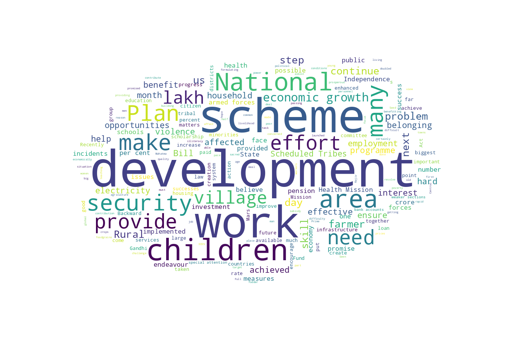
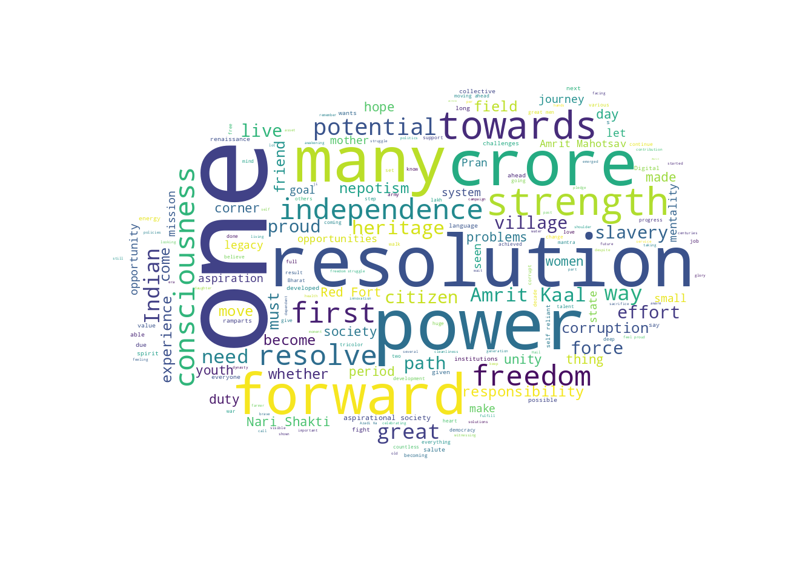

Text Visualization
Package
For text visualization we have used matplotlib, wordcloud, numpy using them will create word clouds for text analysis.
Data
The data being used for the analysis consists of speeches of PM Narendra Modi and ex PM Manmohan Singh. These speeches were given on 15th August and are 10 years apart,i.e, PM Modi's speech is from 2022 and the other speech is from 2012.
Data Source
Both the speeches are stored in .txt format with their source being: PM Modi speech ex PM Manmohan Singh speech
Code
The code is available in .ipynb format and is available at: Google Colab link
Inference
The output of the analysis is given below, the first image is the output of Manmohan Singh's speech:
 We can see that the speech of Manmohan Singh talks about introducing new schemes and focusing on development, security, work,and villages etc. On the other hand Narendra Modi talks about new resolution, one nation , looking forward, remembering the country's old heritage and talks more about the countries potential.
Data Visualization using Python
Package
We will be using pandas, matplotlib, seaborn for the analysis of the data.
Data
The data-set being used is of crime in India from 2001 - 2014, it is the same data-set which is used for tableau. Its data description is given on the home page.
Code and Output
The code is available in .ipynb format and is available at: Google Colab link and Google Colab link 2
Inference
In the above embeded code we can also see the output of the programs. In total we have created 6 graphs using python for the dataset.Each of the output is explained below in order of output generation:
It is a plot of Number of crimes on the Y axis vs Year on the X axis. The legend shows the crime type using different colors.
The chart is plotted between Year on the X axis and Number of crimes on the Y axis. The chart shows the different types of crimes taking place Maharashtra over 2001-2014.
It is a heatmap of state vs year with the legend showing the gradient for number of crimes on the right.
Here we have the Number of crimes on the Y axis and Year on the X axis.The visualization is done using scatter plot.
Here we have the Number of crimes on the Y axis and Year on the X axis.The visualization is done using line chart with a marker.
Here we have the Number of crimes on the Y axis and state on the X axis.The year is represented using legend on the right.
References